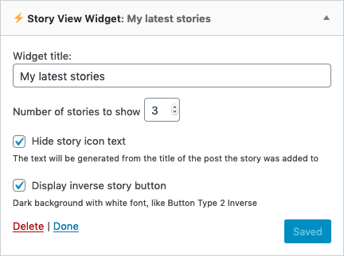
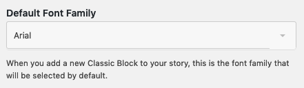

Sometimes you need to add a custom copy to a button to increase clicks, make it "pop" or just simply to make it easier to understand for your visitors. That's when it comes handy that you can change the copy of the story view button that you'll embed to your content. If you use the same text most of the time, you can also make your work easier by setting that as the default text for your Story View buttons.
Although Story View comes with 11 built-in button designs, you can create one for yourself so your buttons will fit the design of your website.
If you know some basic CSS, you can go wild and create a truly custom button for your stories. Or just ask a developer to help you make the necessary changes üòÑ
To save some time, you can also set your custom button as the default button for the stories you'll create.
If you'd like to create a really unique button for your stories, you can also use custom HTML code for your buttons. If you'd like to, this also makes it possible to track the clicks on your story buttons.
Story View is using the built-in media manager of WordPress to make it easier for you to upload and manage the images you'd like to use to create your stories. This also makes it possible to use not just simple static images but animated GIFs in your stories.
Using emojis in your copies can help you to highlight sections or make them a bit more fun for your visitors. The Story View editor supports the use of emojis, so don't hesitate to use them.
Depending on the image you'd like to use in your stories, the position of the text can be crucial when it comes to readability. You can use the built-in text position selector to find the right spot for your content.
Besides setting the position, you can also change the alignment of your text.
If you use the same alignment setting over and over again, maybe it's worth to set it as the default value for new stories.
And of yourse, it's possible to do the same thing with text positioning.
Changing the font family of your text can give a different look for your stories and can also have a positive effect on the experience of your visitors. By supporting 6 popular font families, Story View can help you make your copy look better.
With the help of the built-in colorpicker, you can set almost any kind of color to the copy of your stories and the background of your text block. By using the right colors, you can make the readability of your stories much better and you can also give a unique look to your content.
You can choose from 5 different font-sizes for the text of your stories. For shorter copy, you can use the bigger fonts, and you also have the option to go with a smaller value when it comes to longer texts.
Custom story blocks are one of the most powerful features of Story View as they make it possible to add extra functionality to your stories (add a Mailchimp form, embed a contact form, display a YouTube video). You can embed almost any kind of HTML to custom story blocks (Instagram or Facebook posts, Spotify playlists, Tweets, etc) and you can set a background color for the block.
Google has its own version of the story format, it's called AMP Stories. You can easily create AMP Stories from your Story View stories by providing a few additional information.
You need to set a cover photo for your AMP Story and with Story View, you can use the built-in WordPress media manager to do that.
A publisher logo is also necessary and you can upload that the same way you'd add an image to a simple WordPress post.
Changing the position, font-size, font-family and color of the text on your AMP cover works the same way as with classic story blocks.
To make your job easier, you can set up some default settings for your AMP stories, and you can also track your AMP stories with Google Analytics:
The journey of a visitor doesn't end when they reach the last block of your story. You can drive more traffic to your website with the help of them. With the end screen share function, you can display a share button on the end screen of your story so visitors can share your content on their social channels, in email, or anywhere where they can share a link. This can help you acquire new visitors and drive more traffic to your site.
This is how an end screen looks like with the end screen share function turned on:
You can also recommend an other article to your visitors to keep them on your site for a longer period of time.
With Story View, you can set the URL and the title of your article. You can also give a title to this section so the control is absolutely in your hands.
Although the story format became pretty popular, for some users it could be a bit confusing to navigate between story blocks. That's why we made it possible to display classic controllers in your stories. When they are turned on, your visitors will see two buttons at the bottom of your stories. This will make it more prominent how to go to the next or the previous section of your story.
Of course, you can also change the text on these buttons.
And this is how the buttons look like in your stories:
Besides displaying it on the end screen, you can also turn on the social share feature to be visible on all your story blocks.
This is how your visitors will see the share button in your stories (bottom right corner):
And these are the sharing options they'll see when they tap on the button:
If you use this feature a lot, you can turn it on for all of your stories by default:
When it comes to stories, most platforms are displaying them at the top of the screen. You can do something similar with the help of the Story View Widget.
You can also see the Story View Widget in action on the right side of the demo page.
You can change the number of stories you'd like to display, the design of the story icons, and a few more things:

To save you some time you can set up default values for most of the settings you can change in a story.
Default Story View button text:
Default Story View button type:
Default Font-family:

Default Font-size:
Default text alignment:
Default text position:
You'll get updates and additional features for free.
*VAT not included